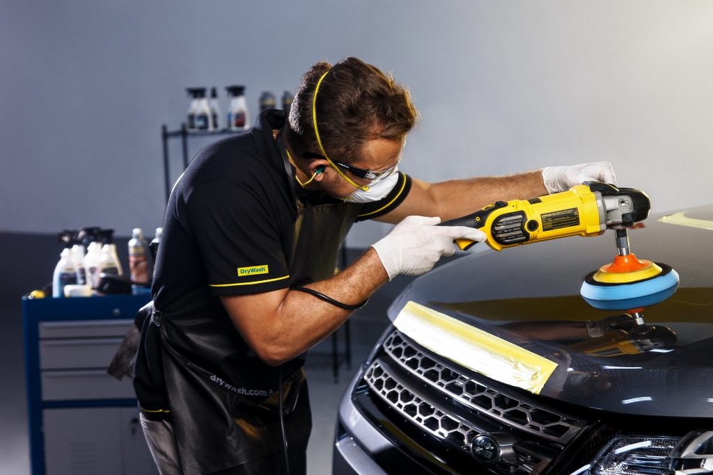

Conheça os nossos serviços

Lavagem técnica
A técnica é um procedimento de limpeza e higienização de veículos com resultado superior, em comparação com uma lavagem simples. Nada é esquecido no processo, com equipamentos importados de última geração, todos os cantos de difícil acesso são limpos, sem necessidade de retirar bancos, rodas, etc. Para uma limpeza completa e minuciosa. Perfeito para clientes exigentes que seguem a tendência do detailing.
Lavem técnica de motor
Quando a limpeza é feita por um profissional especializado, utilizando os produtos e materiais não abrasivos, além de deixar o visual do motor bonito e brilhante, como se tivesse acabado de sair de fábrica, também auxilia na conservação das peças e mangueiras, evitando rachaduras por ressecamento.
Higienização
Higienização automotiva ou higienização de carros é a limpeza de todos os componentes do veículo. Essa limpeza é profunda, assim como a lavagem a seco, retirando qualquer tipo de detritos, revitalizando todo o interior do carro.
Apesar disso, o interior do carro é de fato um requisito importantíssimo, tanto quanto o exterior e sua lavagem automotiva a seco e higienização é mais importante do que aparenta, podendo evitar até doenças e alergias.

Polimento Automotivo
O polimento automotivo é o procedimento de finalização e acabamento da estética automotiva, que visa ativar ou reativar o brilho do veículo, além de eliminar imperfeições causadas pela pintura, como acúmulos de matérias no processo.